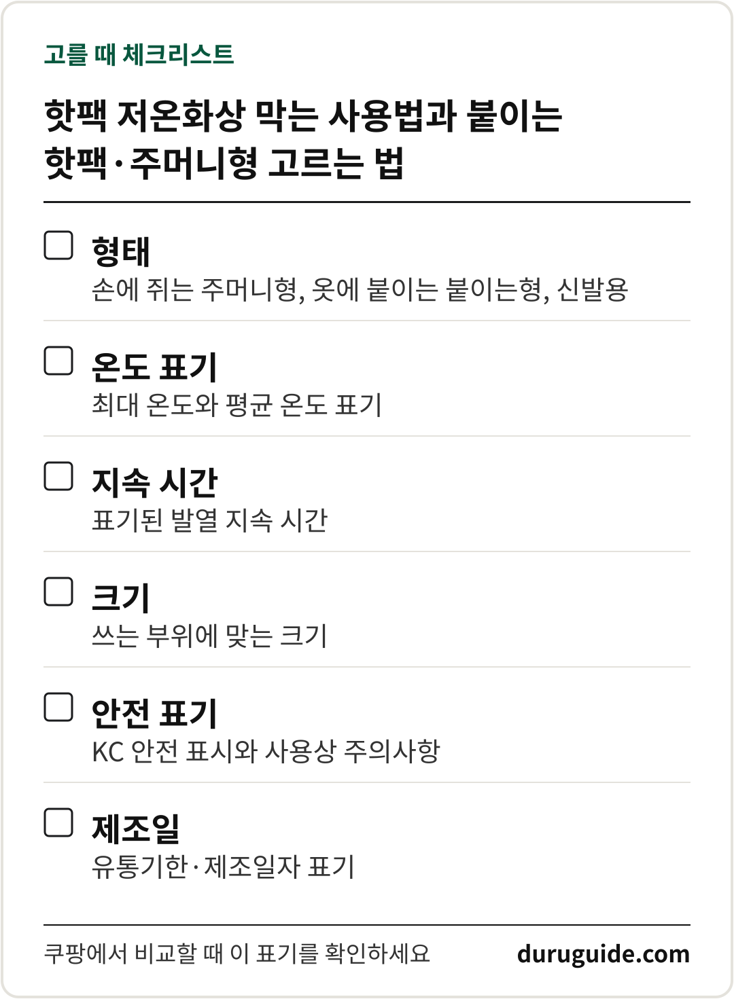

핫팩 저온화상 막는 사용법과 붙이는 핫팩·주머니형 고르는 법
안 사도 되는 경우
목, 손목, 발목처럼 바람이 들어오는 곳을 옷을 겹쳐 입어 막는 것만으로 덜 춥다면 핫팩을 쓰지 않아도 돼요.
이런 상황이죠
출근길이나 야외에서 오래 있어야 할 때 핫팩 하나가 든든해요. 그런데 붙여 두고 깜빡했다가 피부가 빨갛게 변하거나, 며칠 뒤 물집이 잡혀 놀라는 경우가 있어요. 뜨겁다고 느끼지 못했는데도 생기는 게 저온화상이라 더 조심해야 해요.
왜 생기나
저온화상은 아주 뜨겁지 않은 온도라도 같은 부위에 오래 닿아 있을 때 생겨요. 처음에는 따뜻하다고만 느끼기 때문에 알아차리기 늦고, 겉보기보다 깊게 다칠 수 있어요.
- 같은 자리에 오래 — 한 곳에 몇 시간씩 붙여 두면 위험이 커져요.
- 눌려 있을 때 — 핫팩 위에 앉거나 기대거나 벨트로 조이면 열이 빠지지 못하고 피부에 더 밀착돼요.
- 잠들었을 때 — 자는 동안에는 뜨거워도 자세를 바꾸지 못해요.
- 감각이 둔할 때 — 어르신, 어린아이, 술을 마신 상태처럼 뜨거움을 잘 느끼지 못하면 더 쉽게 다쳐요.
사기 전에 먼저 해볼 것
- 옷을 겹쳐 입어요. 목, 손목, 발목처럼 바람이 들어오는 곳만 막아도 훨씬 덜 추워요.
- 맨살에 붙이지 않아요. 붙이는 핫팩은 반드시 속옷이나 옷 위에 붙이세요.
- 자리를 옮겨 줘요. 한 시간쯤마다 피부 상태를 보고 위치를 바꿔 주세요.
- 잘 때는 쓰지 않아요. 잠자리에서는 핫팩을 빼고, 전기장판과 함께 쓰지 마세요.
피부가 빨갛게 오래 남거나 물집이 생기면 문지르지 말고 찬물로 식힌 뒤 진료를 받아 보세요.
고를 때 체크리스트
| 확인 항목 | 보는 기준 |
|---|---|
| 형태 | 손에 쥐는 주머니형, 옷에 붙이는 붙이는형, 신발용 |
| 온도 표기 | 최대 온도와 평균 온도 표기 |
| 지속 시간 | 표기된 발열 지속 시간 |
| 크기 | 쓰는 부위에 맞는 크기 |
| 안전 표기 | KC 안전 표시와 사용상 주의사항 |
| 제조일 | 유통기한·제조일자 표기 |
이런 분께는 맞지 않아요
- 피부 감각이 둔해진 분이나 스스로 떼기 어려운 분은 붙이는 핫팩보다 손에 쥐는 형태가 나아요.
- 하루에 여러 번 쓴다면 일회용보다 충전식 손난로가 맞을 수 있어요.
형태별로 이렇게 나눠 써요
- 주머니형 — 손이 시릴 때 쥐고 있다가 주머니에 넣어 두기 좋아요. 피부에 오래 고정되지 않아 비교적 부담이 적어요.
- 붙이는형 — 등이나 허리처럼 손이 닿지 않는 곳을 데울 때 써요. 꼭 옷 위에 붙이고, 앉거나 기댈 때 눌리지 않는 자리를 고르세요.
- 신발용 — 발가락 쪽에 넣는 얇은 형태예요. 오래 걷거나 서 있을 때 쓰되, 신발 안은 열이 갇히기 쉬우니 중간중간 발 상태를 확인하세요.
흔드는 방법이나 붙이는 위치, 사용 시간은 제품마다 다르니 포장에 적힌 사용법과 주의사항을 따르세요. 내용물이 새어 나온 핫팩은 쓰지 마세요.
추천 제품 찾기
먼저 어디에 쓸지(손, 등, 발)와 몇 시간 필요한지를 정하세요. 쿠팡에서는 형태, 최대·평균 온도, 지속 시간, 안전 표기를 비교해 보시면 돼요. 현재 가격은 쿠팡에서 확인해 주세요.

이 포스팅은 쿠팡 파트너스 활동의 일환으로, 이에 따른 일정액의 수수료를 제공받습니다.
이 콘텐츠는 토스쇼핑 쉐어링크 활동의 일환으로, 링크를 통한 구매가 발생하면 일정 수수료를 지급받습니다.